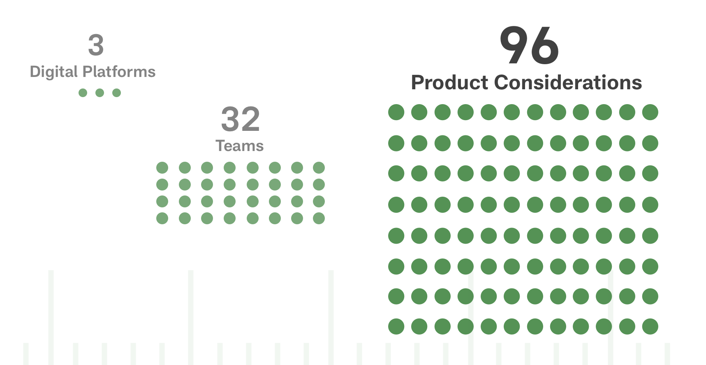
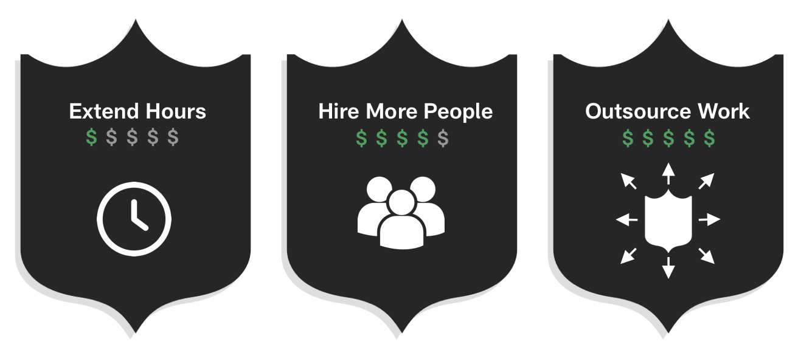
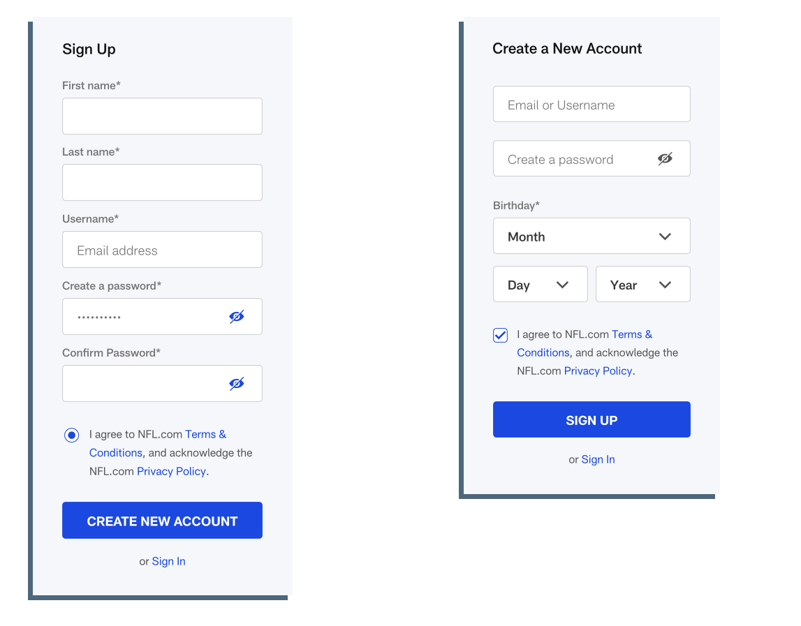
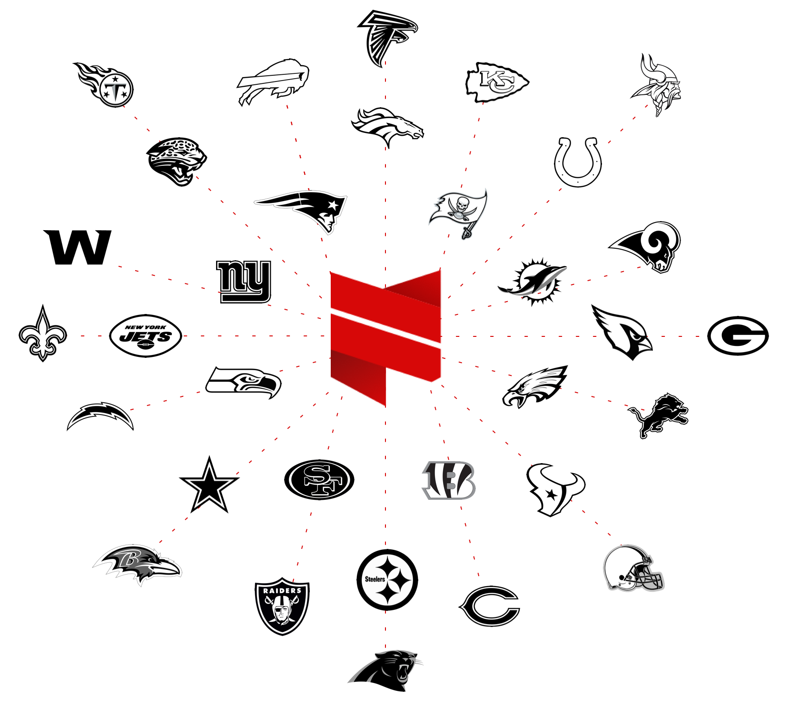

.
← Back

Design touches every aspect of the fan’s experience. At the NFL, the goal was to establish the products as the trusted source and authority of all things football.
Building credibility begins with consistency. A cohesive experience needed to be delivered across all devices, no matter their level of football knowledge. However, with 32 NFL Football teams, each with distinct identities/brands, delivering consistent experiences across 3 different platforms (mobile, web, connected TV) presented an enormous resource challenge.
It was possible for 96 different products to be developed for 32 NFL teams on 3 different platforms (CTV, mobile, web).
To deliver consistent fan experiences without exponentially increasing support costs, the NFL needed design to scale
Problems
The NFL is a fast paced environment that is subject to many priority shifts throughout the year. Therefore, product teams were typically left with options that didn’t scale well, were expensive, or both.
With many deadlines, the NFL typically needed to quickly and inefficiently spend money.
As a solution, the NFL shifted towards a component based design system. However, the adoption of a new methodology came a new issue. Using a component based design system required a long term effort/investment by the product team, an idea that seemed infeasible for an organization that has many of its deadlines predetermined by seasonal events.
The design system, named Facemask, needed to be added slowly on a project-by-project basis.
Impacts
With the adoption of Facemask, the system gradually became more comprehensive and ameliorated other issues within the organization.
- Communication between product teams improved
- Product strategy became transparent/visible to all employees
- No more ambiguity communicating the design process
- Design feedback became more focused and actionable
Better Communication
Before Facemask, communication between designers typically broke down as a result of the NFL’s pressing deadlines. It wasn’t uncommon for designers to create different solutions to the same problem. As a result, design debt accumulated and continuity seemed impossible to manage.
Two designers created the same signup page but with different components, demonstrating the need for version control.
As Facemask evolved, knowledge shared by the product team became more uniform. Digital products began to share functional and visual qualities, eliminating the need for custom solutions.
Minimizing Resources Spent
Each NFL team was responsible for the design of their own website. Some teams had their own design teams, while others hired external agencies. As a result, each team’s website had drastically different levels of quality and usability.
Facemask allowed the NFL to absorb all 32 teams into the redesign of NFL.com and eliminate the need of external vendors. The design system evenly distributed each team’s online representation with less invested resources.
Fostering Innovation
With an entire system of standards and reusable component libraries in place, the NFL avoided redundant solutions. Each designer could work under a unified set of guidelines that allowed them to focus less on clarifying their solution and more on iterating existing experiences. Facemask allowed designers to explore different interactions based on reusable components. It gave the NFL the opportunity to truly understand the needs of football fans and create the ultimate football experience.
Challenges
Rate of Adoption
Getting teams to adopt new processes is always an obstacle; it’s important to remember that teams have other glaring deadlines they need to. Facemask was something that needed to be developed over time as a means to avoid conflict with existing processes. Facemask was described to me as this living, breathing system that is always changing. It wasn’t something meant to be shoehorned, but moreso something that needed to grow alongside designers.
Relying on External Work
The NFL is in close touch with select external agencies when internal resources become scarce. In a fast paced environment, it was inevitable and something out of the designers’ control. However, the implementation of Facemask slowly reduced dependency on those external agencies.
Some agencies realized that adopting Facemask could help them secure future opportunities with the NFL, validating the utility of Facemask and demanding the need of a way to onboard those agencies quickly. (See my with the quickstart guide).
Shifts in Demand
The NFL is a media company subject to the same challenges as other media companies. Declining engagement, plummeting subscriptions, and pressure to innovate fostered an ever-changing environment. Facemask allowed the product teams to align under set of standards/principles and remain focused on business objectives.